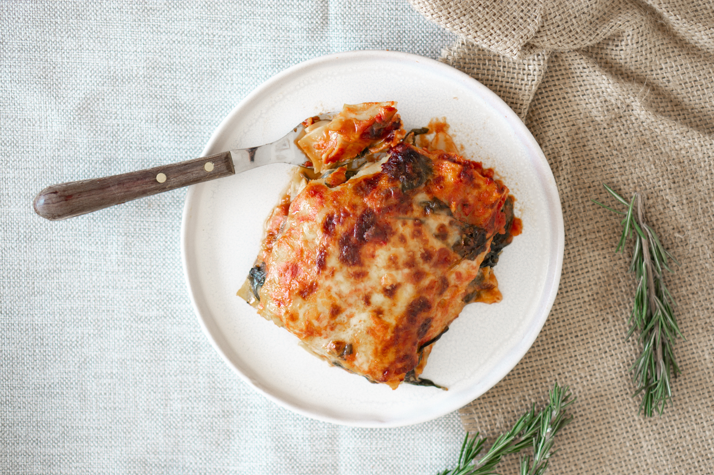

Lasagna

Description
A hearty, vegetable lasagna that's Keto-Friendly
Ingredients
- 1 package of noodles
- 1 pound fresh mushrooms, sliced
- 3/4 cup chopped green peppers
- 3/4 cup chopped onions
- 3 cloves of garlic, minced
- 2 tablespoons of olive oil
- 2 jars of pasta sauce
- 1 teaspoon dried basil
- 1 container of part-skimmed ricotta cheese
- 4 cups of shredded mozzarella cheese
- 2 eggs
- 1/2 cup grated parmesan cheese
Steps
- Step 1: Cook the lasagna noodles in a large pot of boiling water for 10 minutes, or until al dente. Rinse with cold water, and drain
- Step 2: In a large saucepan, cook and stir mushrooms, green peppers, onion, and garlic in oil. Stir in pasta sauce and basil; bring to a boil. Reduce heat, and simmer 15 minutes.
- Step 3: Mix together ricotta, 2 cups mozzarella cheese, and eggs.
- Step 4: Preheat oven to 350 degrees F (175 degrees C). Spread 1 cup tomato sauce into the bottom of a greased 9x13 inch baking dish. Layer 1/2 each, lasagna noodles, ricotta mix, sauce, and Parmesan cheese. Repeat layering, and top with remaining 2 cups mozzarella cheese.
- Step 5: Bake, uncovered, for 40 minutes. Let stand 15 minutes before serving.